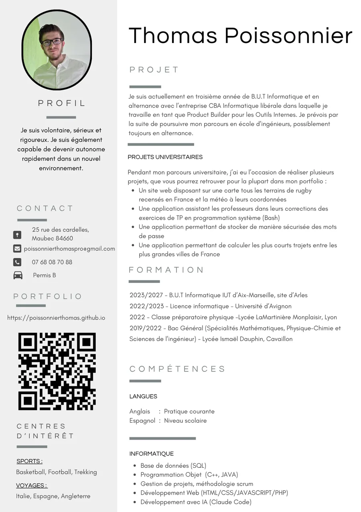

2026 — Arles, France
Thomas Poissonnier
Développeur Logiciel
Product Builder — Gestion de projets — Bases de données
9
Projets et expériences
7
Langages pratiqués
2027
Diplôme BUT Informatique visé
Mon Profil
D'où je viensMon Parcours
Voir en détail Masquer le détail
Ce que je peux vous apporter
Un profil jeune et polyvalent qui sait travailler de manière autonome. Avec de bonnes capacités d'apprentissage, je suis capable de m'adapter à de nombreuses situations.
Mes axes de progression
Il m'arrive souvent de ne pas assez me faire confiance, de vérifier une information que je connais déjà ou de mettre en doute un travail que je sais faire. Aussi, si vous cherchez un profil avec un sens aigu de l'esthétisme, ce n'est clairement pas mon profil.
Mes centres d'intérêt
En dehors du codeEn dehors de l'informatique, voici les activités qui rythment mon quotidien :
Ces passions cultivent mon esprit d'équipe, ma persévérance et ma curiosité intellectuelle.
Mon CV
Tout en une page
Le lien pour ouvrir mon CV dans votre navigateur :